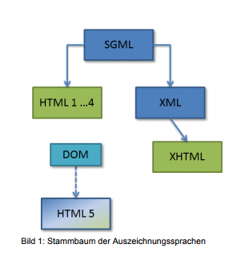
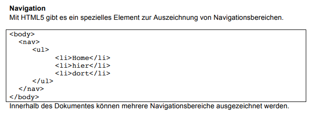
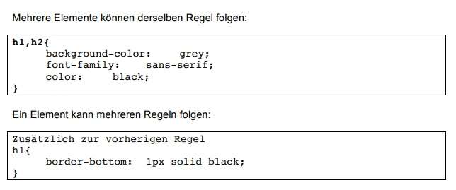

Vorlesung und Übung Nr.1 Grundlagen Webprogrammierung
Posted by: Jakob Lagaly
Einführung und Organisatorisches + ein wenig HTML
Wir haben heute Organisatorisches besprochen und ein wenig HTML gemacht.
Posted by: Jakob Lagaly
Wir haben heute Organisatorisches besprochen und ein wenig HTML gemacht.
this was easy
Posted by: Jakob Lagaly
Die Vorlesung drehte sich um Grundlagen der HTML-Syntax (die Grammatik) sowie der Semantik (die Lehre der Bedeutung). Es ging darum, was Elemente sind und wie sie geschrieben werden - dabei gibt es normale Elemente die geöffnet und geschlossen werden, und Standalone-Elemente. Außerdem sprachen wir über Attribute, und wie in HTML Formulare angelegt und dargestellt werden.
 this was not so easy
Posted by: Adrian
In CSS werden Gestaltungsregeln für eine Website festgelegt. Dabei ist zu beachten, dass jeder Browser ein Browser-Stylesheet mitbringt. Dieses definiert grundsätzliche, grobe Gestaltungsregeln wie bspw. die Größe von h1-Elementen oder die Abstände zwischen Absätzen. Wir schreiben mithilfe von CSS ein Autoren-Stylesheet, das erst nach dem Browser-Stylesheet abgearbeitet wird.
Außerdem wurde in der heutigen Vorlesung die Bedeutung und die Hierarchie von CSS-Selektoren besprochen, mit deren Hilfe bestimmte HTML-Elemente gestylt werden können. Dabei gibt es beispielsweise die Möglichkeit, alle p-Elemente eines HTML-Dokuments zu gestalten. Ebenso kann die class oder id selektiert werden. Durch Kombination von verschiedenen Selektoren lassen sich Elemente noch spezifischer ansprechen, bspw. durch "ul.m" – es werden alle ul-Elemente mit der Klasse "m" selektiert.

this was not really so easy